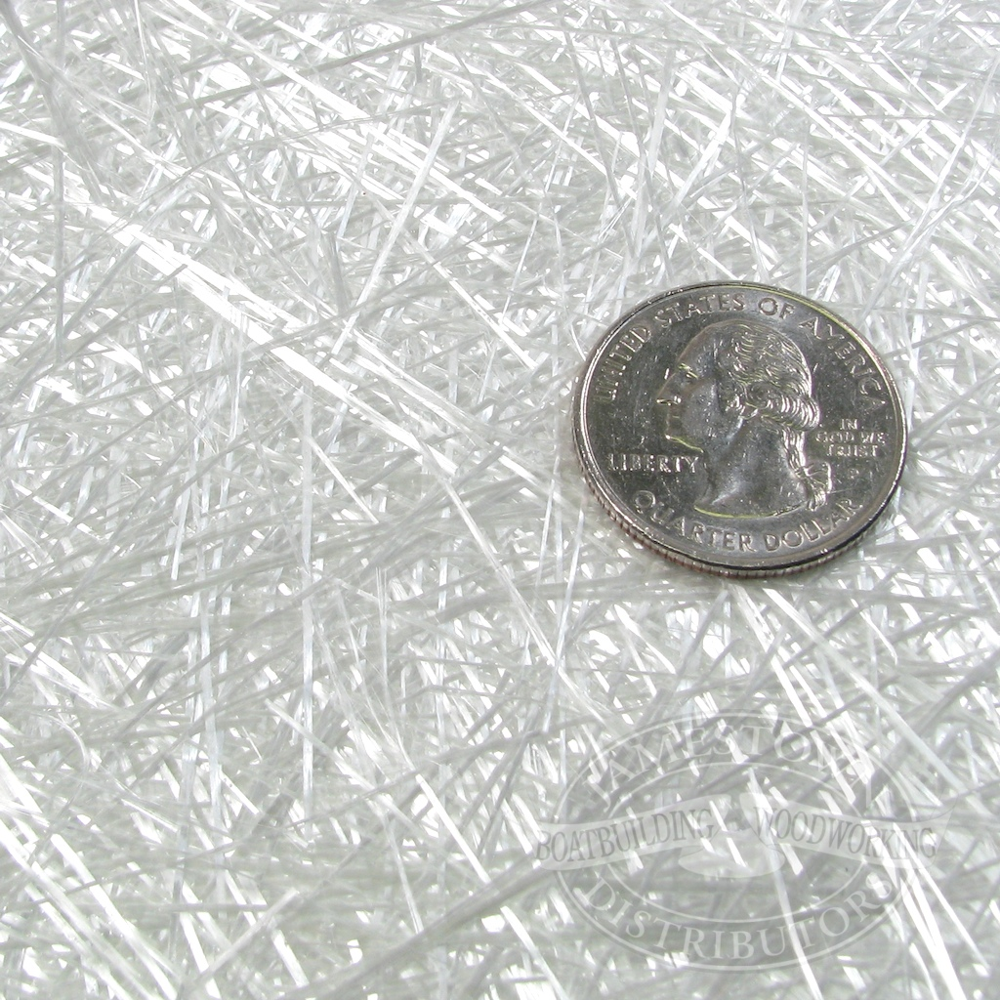
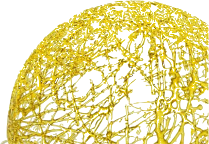
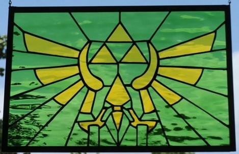

You may think there's nothing special about glass.
You will soon want to rethink this narrow mindset.
There are many types of glass.
|  |
 |
 |
Each is specialized, with pros and cons. For example:
The main problem with glass is its breakability. It's hard to make something strong(able to resist pressure), tough(able to resist impact), and hard (able to resist scratching) at the same time. These attributesare especially important for things like phone screens, bulletproof windows, and skyscrapers. Corning has developed a reputation for manufacturing their nearly unrivaled Gorilla GlassFor use mostly on small devices. But while Gorilla Glass has a chemically treated tough layer, palladium microglass is resilient by nature, even surpassing steel in strength. Here's how they make it:
public class makestrongglass{
public static void main (String [] args){
Planet earth=new Planet(99000000);
Material sand=new Material(2349083457);
sand.setMass(88900000);
Material palladium=new Material(46);
palladium.setAmount(56000);
while(earth.hasPalladium() && earth.hasSand()){
earth.minePalladium();
earth.scoopSand();
sand.Heatc(4000);
sand.Infuse(Palladium);
sand.setShape(1, 50, 50, .5);
sand.Coolc(77777);
}
}
}
And here is what a window made of it looks like
| PLEASE | PAY | ATTENTION |
|---|---|---|
| LOOK | AT | HOW |
| STRONG | THIS | VERY |
| STURDY | GLASS | LOOKS |
It's definitely the future